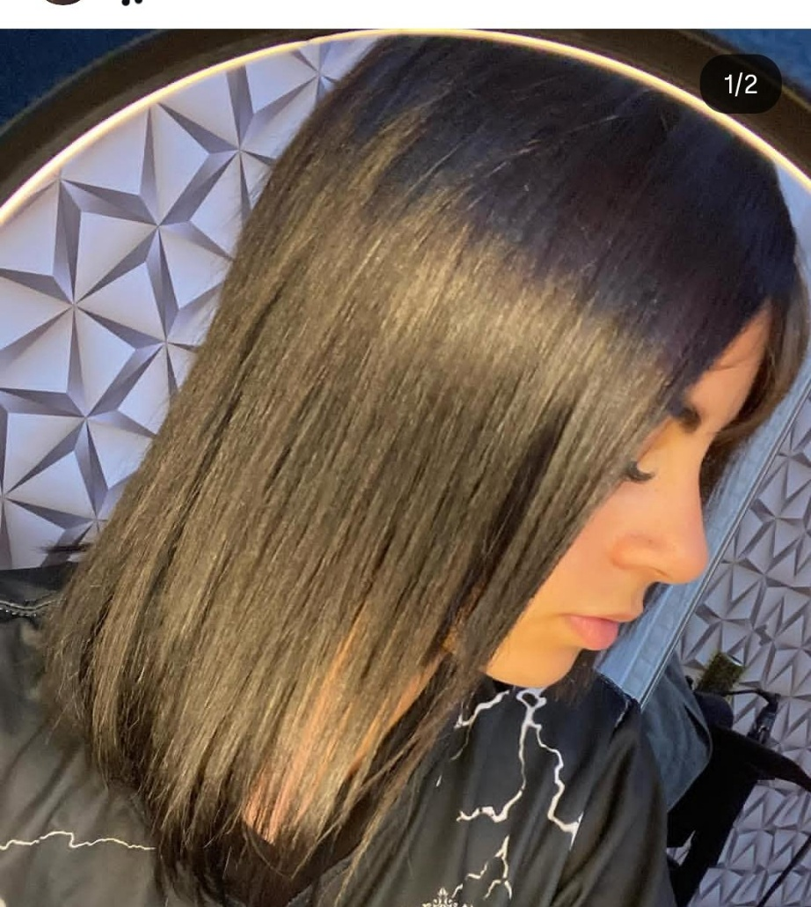
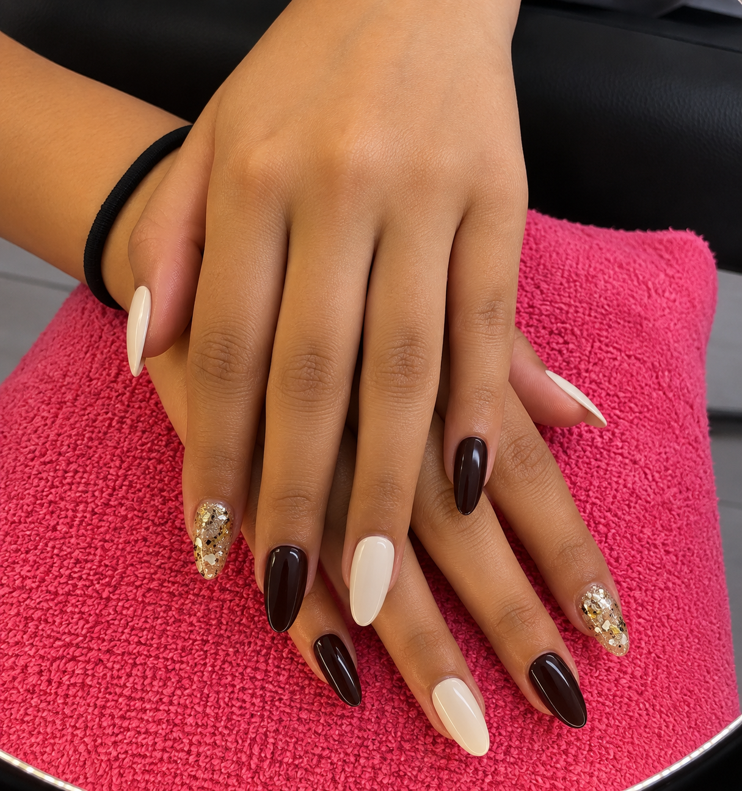

Corte reto com pontas suaves. elegante e prático.
MAYARA DIAS
HAIR DESIGNER
Cuidar da sua saúde e da sua autoestima é a nossa prioridade. Oferecemos tratamentos personalizados para que você sorria com total confiança e leveza.


Corte reto com pontas suaves. elegante e prático.
Tons personalizados. cor ideal para você.
Penteado semi-preso. elegante e versátil
Sobre Mim
A trajetória de Mayara Dias é a de uma mulher que construiu sua história com muita humildade, dedicação e determinação. Desde o início de sua caminhada, sempre valorizou o respeito e a vontade de conquistar seus objetivos.
Com o passar dos anos, Mayara enfrentou desafios e aprendeu com cada experiência. Sua simplicidade e a forma de tratar as pessoas com carinho fizeram parte de sua trajetória e ajudaram a construir a mulher forte e batalhadora que é hoje.
Movida pelo sonho de trabalhar com beleza e transformar a autoestima das pessoas, Mayara conquistou seu espaço e se tornou dona de seu próprio salão de beleza. Hoje, seu salão representa não apenas um negócio, mas também o resultado de muito esforço, sonhos e perseverança.
Rua: Benedito Dias Siqueira
nº 315
De segunda a sexta das as
sábado das ate as
A SUA BELEZA
É NOSSO OBJETIVO!
Mayara Dias
Beleza e Bem-Estar
O que nossos clientes dizem sobre nosso trabalho
★★★★★
adorei o atendimento no salão de Beleza Mayara Dias! Profissionais muito atencioso, ambiente agradavel e um trabalho feito com capricho.
★★★★★
A mayara é muito querida e atenciosa! Sai do salão me sentindo uma outra pessoa. amei!
★★★★★
profissional excelente, ambiente agradavel e serviço feito com muito cuidado. Recomendo demais!